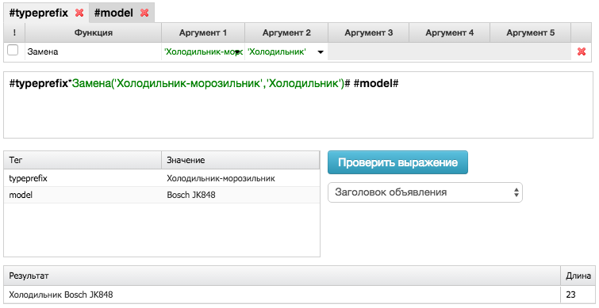
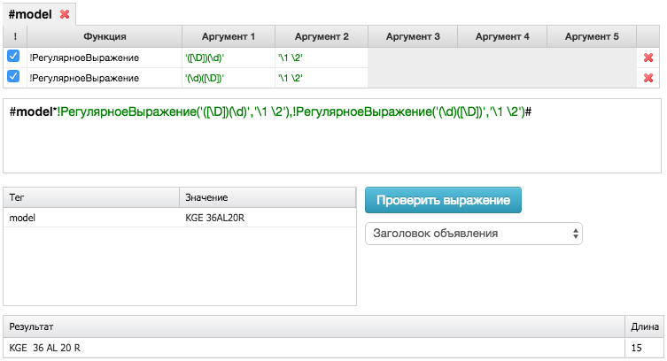
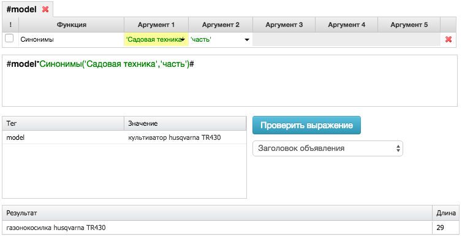
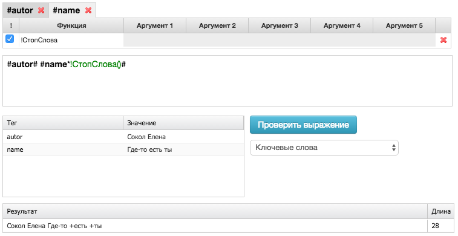

Типы функций
Подробнее про синтаксис и применение функций читайте в этой статье
По типу использования все функции можно разделить на:
Обрезка
Обрезают содержимое тега по заданным параметрам.
ВзятьДо
Функция позволяет обрезать значение до заданного объекта.
В Аргументе-1 нужно указать число - до какого по порядку объекта нужно обрезать значение тега (до первого встретившегося значения, то первый аргумент имеет значение - 1). Аргумент-2 указывается объект, до какого нужно обрезать значение. Аргумент-3 указывает слева (с начала выражения) или справа(с конца выражения)надо отсчитывать номер указанный в Аргументе-1. Аргумент-4 имеет два значения: включая - значит результат действия функции будет содержать объект из Аргумента-2, и не включая - значит функция обрежет тег до объекта из Аргумента-2.
Аргументы 3 и 4 являются необязательным, без аргумента 3 подсчет по умолчанию начнется слева, а без аргумента 4 по умолчанию функция будет обрезать не включая объект из аргумента 2.
| Аргумент-1 | Аргемент-2 | Аргемент-3 | Аргемент-4 |
|---|---|---|---|
| порядковый номер элемента | слова символа цифры кириллица латиница значение (вводится вручную) тег |
слева справа |
включая не включая |
Условие:
#model# = Samsung Galaxy S5 16Gb SM-G900F синий
Результат генерации:
#model*ВзятьДо(1,кириллица,слева,не включая)# = Samsung Galaxy S5 16Gb SM-G900F
Условие:
#name# = Атлант расправил плечи (комплект из 3 книг)
Результат генерации:
Книга #name*ВзятьДо(1,'(','слева','не включая')# = Книга Атлант расправил плечи
ВзятьПосле
Функция позволяет взять значение тега после заданного объекта.
В аргументе 1 нужно указать число - после какого по порядку объекта нужно взять значение тега. Аргумент-2 указывается объект, после какого нужно обрезать значение. Аргумент-3 указывает слева (с начала выражения) или справа(с конца выражения)надо отсчитывать номер указанный в Аргументе-1. Аргумент-4 имеет два значения: включая - значит результат действия функции будет содержать объект из Аргумента-2, и не включая - значит функция обрежет тег после объекта из Аргумента-2.
Аргументы 3 и 4 являются необязательным, без аргумента 3 подсчет по умолчанию начнется слева, а без аргумента 4 по умолчанию функция будет обрезать не включая объект из аргумента 2.
| Аргумент-1 | Аргемент-2 | Аргемент-3 | Аргемент-4 |
|---|---|---|---|
| порядковый номер элемента | слова символа цифры кириллица латиница значение (вводится вручную) тег |
слева справа |
включая не включая |
Условие:
#name# = Этой ночью, мы заставим их запомнить. Это Зион! И мы не боимся!
Результат генерации:
#name*ВзятьПосле(2,'символа','слева','не включая')# = Это Зион! И мы не боимся!
ВзятьТолько
Оставляет в качестве значений тега символы соответствующие Аргументу-1
| Аргумент-1 |
|---|
| цифры кириллица латиница буквы |
Условие:
#model# = w 3240
Результат генерации:
#model*ВзятьТолько(цифры)# = 3240
Текстовые
РазбитьНаЧасти
Функция разделяет значение выражения на комбинации по одному слову (но не меньше 4 символов), по 2 слова, по три слова и тд.
Функция РазбитьНаЧасти не содержит Аргументов.
Условие:
#model# = Galaxy S5 SM-G900F
Результат генерации:
#model*!РазбитьНаЧасти()#=Galaxy, Galaxy S5, SM-G900F, SM-G900F Galaxy, SM-G900F S5
РазбитьПоСимволу
Функция РазбитьПоСимволу разбивает одну строку на несколько строк по заданному символу. Функцию удобно использовать для добавления списка продающих слов к названию модели или для добавления списка дополнительных ключевых запросов.
| Аргумент-1 |
|---|
| Символ, по которому необходимо разбить строку. Если в качестве разделителя используется запятая, запишите ее в ' ' (одинарных кавычках) |
Условие:
#param_тип# = купить;цена;продажа
#model# =KGE 36AL20R
Результат генерации:
#model# #param_тип*!РазбитьПоСимволу(;)# = KGE 36AL20R купить, KGE 36AL20R цена, KGE 36AL20R продажа
Сцепить
Функция Сцепить работает также как одноименная функция в Excel, соединяя значения аргументов, перечисленных через запятую
ЦифраБуква
Функция ставит пробел в связке цифры и буквы.
Функция ЦифраБуква не содержит Аргументов.
Условие:
#model# = w3240
Результат генерации:
#model*!ЦифраБуква()# = w 3240
Логические
Если
Работает как одноименная функция в Excel. В качестве Аргумента-1 пишется условие, если условие выполняется то выражение генерится через функцию указанную в Аргументе-2, если условие не выполняется на тег действует функция указанная в Аргументе-3.
| Аргумент-1 | Аргемент-2 | Аргемент-3 |
|---|---|---|
| условие | действие при выполнении условия | действие при НЕ выполнении условия |
Условие:
vendor=Bosch
model=KGE 36AL20R
Результат генерации:
#model*!Если(Содержит(Тег(vendor)),Сцепить(Тег(model)),Сцепить(Тег(vendor), ,Тег(model)))#=Bosch KGE 36AL20R
НеСодержит
Работает как фильтр, отклоняя результаты генерации, которые содержат объект из Аргумента-1, Аргументы 2-5 определяют минимальные и максимальные границы длины символов и количества слов которые необходимо исключать.
Функцию можно использовать только с первым аргументом, с первыми тремя аргументами и со всеми пятью аргументами.
| Аргумент-1 | Аргемент-2 | Аргемент-3 | Аргемент-4 | Аргемент-5 |
|---|---|---|---|---|
| все (любое) цифры кириллица латиница буквы значение (вводится вручную) тег |
минимальное количество слов | максимальное количество слов | минимальное количество символов | максимальное количество символов |
Условие:
#model# = телевизор samsung 40F6400
Результат генерации:
#model*!РазбитьНаЧасти(),!НеСодержит('буквы',1,1),!НеСодержит('кириллица')# = 40F6400 samsung
Содержит
Работает как фильтр. Аргумент-1 определяет требуемый объект в результате генерации, аргументы 2-5 определяют минимальные и максимальные границы длины символов и количества слов.
Функцию можно использовать только с первым аргументом, с первыми тремя аргументами и со всеми пятью аргументами.
| Аргумент-1 | Аргемент-2 | Аргемент-3 | Аргемент-4 | Аргемент-5 |
|---|---|---|---|---|
| - все (любое значение) - цифры - кириллица - латиница - буквы - значение (вводится вручную) - тег |
минимальное количество слов | максимальное количество слов | минимальное количество символов | максимальное количество символов |
Условие:
#model*РазбитьНаЧасти(),!Содержит('цифры',1,3)#
Результат генерации:
#model*РазбитьНаЧасти(),!Содержит('цифры',1,3)# = U9000, U9000 Телевизор, U9000 Samsung
Ссылки
Позволяют работать с URL-ами.
КодироватьДляСсылки
Перекодирует кириллические и специальные символы в URL. Функция может быть использована только в поле "Выражение для URL" на вкладке "Ссылки" и в строках для ссылок дополнительных ссылок.
Условие:
#url# = http://site.ru/
#typeprefix# = утюги
Результат генерации:
#url#?utm_campaign=#typeprefix*!КодироватьДляСсылки()#=http://site.ru/?utm_campaign=%D1%83%D1%82%D1%8E%D0%B3%D0%B8
ПрисоединитьUtm
Добавляет к ссылке знак ?,если в исходном url знак вопроса не встречается, и знак &, если в исходном url уже использовался знак ?. Исключение составляют случаи, когда знак ? или & являются последними символами в передаваемом url. Функция может быть полезна, если вы хотите прописать значение utm самостоятельно, но не уверены, как формируются url в исходном файле или не изменит ли клиент значения ссылок со временем. Функция может быть использована только в поле "Выражение для URL" на вкладке "Ссылки" и в строках для ссылок дополнительных ссылок.
Условие:
#url# = http://site.ru/search/index.php/?q=direct/
Результат генерации:
#url*ПрисоединитьUtm()# = http://site.ru/search/index.php/?q=direct/&
Условие:
#url# = http://site.ru/search/index.php/?
Результат генерации:
#url*ПрисоединитьUtm()# = http://site.ru/search/index.php/?
УдалитьUtm
Удаляет из ссылок utm-метку, передаваемую в исходном файле. Функция полезна, если вы хотите присвоить ссылке новые метки или воспользоваться автопометкой К50::Генератора. Функция может быть использована только в поле "Выражение для URL" на вкладке "Ссылки" и в строках для ссылок дополнительных ссылок.
Условие:
#url# = http://site.ru/?utm_source=yandex.market&utm_medium=cpc&utm_campaign=bosch
Результат генерации:
#url*!УдалитьUtm()#=http://site.ru/
Условие:
#url# = http://site.ru/?utm_source=yandex.market&utm_medium=cpc&utm_campaign=bosch
Результат генерации:
#url*!УдалитьUtm()#?utm_source=yandex.direct = http://site.ru/?utm_source=yandex.direct
Регистр
Позволяют изменять регистр
БольшиеБуквы
Изменяет регистр всех символов в значении тега на заглавный. Функция может быть использована только для формирования заголовков объявлений, текстов объявлений или текстов дополнительных ссылок.
Условие:
#place# = Мхат
Результат генерации:
#place*!БольшиеБуквы()# = МХАТ
ВсеСБольшойБуквы
Изменяет регистр всех первых символов в словах в значении тега на заглавный, все остальные символы пишутся в строчном регистре. Функция может быть использована только для формирования заголовков объявлений, текстов объявлений или текстов дополнительных ссылок.
Условие:
#name# = ЭЛЛИптический ТРЕнажер
Результат генерации:
#typeprefix*!ВсеСБольшойБуквы()#=Эллиптический Тренажер
МаленькиеБуквы
Изменяет регистр всех символов в значении тега на строчный регистр. Функция может быть использована только для формирования заголовков объявлений, текстов объявлений или текстов дополнительных ссылок.
Условие:
#name# = ЭЛЛИптический ТРЕнажер
Результат генерации:
#typeprefix*!ВсеСБольшойБуквы()#=эллиптический тренажер
СБольшойБуквы
Изменяет регистр первого символа в словах в значении тега на заглавный, все остальные символы пишутся в строчном регистре. Функция может быть использована только для формирования заголовков объявлений, текстов объявлений или текстов дополнительных ссылок.
Условие:
#name# = ЭЛЛИптический ТРЕнажер
Результат генерации:
#typeprefix*!ВсеСБольшойБуквы()#=Эллиптический тренажер
Замена
Заменяют содержимое тегов другим содержимым
Замена
Функция Замена меняет значение объекта, указанного в Аргументе-1, на значение из Аргумента-2
| Аргумент-1 | Аргемент-2 |
|---|---|
| кириллица латиница цифры спецсимвол значение (вводится вручную) тег |
транслит раскладка значение тег |
Условие:
#typeprefix# = холодильник-морозильник
#model# = Bosch JK848
Результат генерации:
#typeprefix*!Замена(холодильник-морозильник,холодильник)# #model# = холодильник Bosch JK848
Условие:
#typeprefix# = стиральные машины
Результат генерации:
#typeprefix*!Замена(кириллица,транслит)# = stiralnye mashiny

РегулярноеВыражение
Функция РегулярноеВыражение действует по стандартным правилам функции regular.
Условие:
#model# =KGE 36AL20R
Результат генерации:
#model*!РегулярноеВыражение('([\D])(\d)','\1 \2'),!РегулярноеВыражение('(\d)([\D])','\1 \2')# = KGE 36 AL 20 R
Действие данного регулярного выражения равносильно действию функции ЦифраБуква()

Синонимы
Для использования данной функции необходимо заранее подготовить список синонимов. Подробнее про синонимы читайте в этой статье.
Функция синонимы позволяет заменять значения слов из тегов на синонимичные значения/добавлять синонимичные значения, которые вы прописываете в списке. В Аргументе-1 прописывается название списка, в котором содержится синоним для значения. В Аргументе-2 указывается, в каком случае надо заменять слово из тега на синоним из списка. Целиком - замена нужна только при полном совпадении тега со значением. Часть - замена нужна при совпадении хотя бы части тега со значением из списка синонимов.
| Аргумент-1 | Аргемент-2 |
|---|---|
| название списка синонимов | часть целиком |
Условие:
#model# = газонокосилка husqvarna TR430
Название списка синонимов - Садовая техника
Результат генерации:
#model*Синонимы('Садовая техника','часть')# = KGE 36 AL 20 R

СтопСлова
Функция ставит знак +(плюс) перед стопсловами. Стоп-слова в Яндекс.Директе — это служебные части речи и местоимения, а также любые слова, не несущие дополнительного смысла.
Условие:
#autor# = Сокол Елена
#name# = где-то есть ты
___
Результат генерации:
#autor# #name*!СтопСлова()# = Сокол Елена Где-то +есть +ты

Морфология
Функция для склонения слов
Форма
Приводит значение в теге к заданному падежу и числу. Падеж и число задается в Аргументах 1 и 2 соотвественно.
| Аргумент-1 | Аргемент-2 |
|---|---|
| именительный родительный винительный дательный творительный предложный |
единственное множественное |
Условие:
#typeprefix# = очиститель воздуха
Результат генерации:
Много #typeprefix*Форма('родительный','множественное')# в наличии! = Много очистителей воздуха в наличии!
Условие:
#region# = Москва и область
Результат генерации:
Бесплатная доставка по #region*!Форма(дательный,единственное)# = Бесплатная доставка по Москве и области
Числительное
Добавляет к значению тега заданное слово указанное в аргументах в той форме, которая соответствует числительному в значении тега
| Аргумент-1 | Аргемент-2 | Аргемент-3 |
|---|---|---|
| слово в именительном падеже в единственном числе | слово в родительном падеже в единственном числе | слово в родительном падеже во множественном числе |
Условие:
#quantity# = 2230
Результат генерации:
#quantity*!Числительное(модель,модели,моделей)# = 2230 моделей
Удаление
Удаление части фразы
ДобавитьПустоту
Добавляет вариант генерации с пустым значением тега.
Условие:
#name# = Венский Дом
Результат генерации:
Жилой комплекс #name*ДобавитьПустоту()# = Жилой комплекс, Жилой комплекс Венский Дом
ОбрезатьПоСловам
Обрезает значение тега по длине так, чтобы количество символов в результате не превышало указанное число. Обрезка происходит только по целым словам.
Исключение составляет ситуация, когда указанное в аргументе число меньше длины первого слова, тогда первое слово может либо обрезаться по символам либо может остаться в первоначальном написании. За это отвечает Аргумент-2
'Обрезать' - обрезать первое слово по количеству символов, 'Пропускать' выражение не будет сгенерировано - выберите аргумент 2 'пропускать'. Функцию удобно использовать для того, чтобы уместить Заголовки, Тексты объявлений и Тексты дополнительных ссылок в ограничение системы.
| Аргумент-1 | Аргемент-2 |
|---|---|
| максимальное количество символов | 'обрезать' 'пропускать' |
Условие:
#name# = Don Diablo, Gorgon City, Matisse & Sadko
Результат генерации:
#name*ОбрезатьПоСловам(33,'обрезать')# = Don Diablo, Gorgon City, Matisse
УбратьПовторы
Удаляет повторяющиеся объекты в значении тега
Условие:
#model# = KGE 36AL20R KGE
Результат генерации:
#model*!УбратьПовторы()# = KGE 36AL20R
УбратьПробелы
Удаляет лишние пробелы (более одного пробела подряд, а также пробелы в начале и конце значения тега)
Условие:
#name# = Преступление и Наказание
Результат генерации:
Книга "#name*!УбратьПробелы()#" = Книга "Преступление и Наказание"
УбратьСпецсимволы
Все спец.символы в значении тега заменяются на пробел.
Если вы хотите оставить какой-то из спецсимволов, впишите его в Аргумент-1
| Аргумент-1 |
|---|
| Спецсимволы, которые не должны удаляться. Несколько спец.символов пишутся в ' ' и разделяются запятыми |
Условие:
#name# = «Дожди & Связи»
Результат генерации:
Концерт #name*!УбратьСпецсимволы()# = Концерт Дожди и Связи
Условие:
#place# = «Консерватория им.Чайковского»
Результат генерации:
#place*!УбратьСпецсимволы('.')# = Консерватория им.Чайковского
```
УбратьФразуКороче
Удаляет фразу, суммарное количество символов в которой меньше или равно цифре, указанной в качестве аргумента.
| Аргумент-1 |
|---|
| Максимальное количество символов |
Условие:
#model# = Во фразе 20 символов
Результат генерации:
#model*!УбратьФразуКороче(21)# = Пустое значение